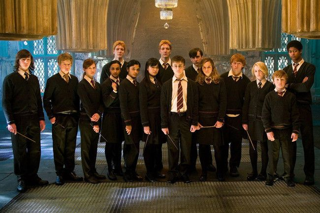
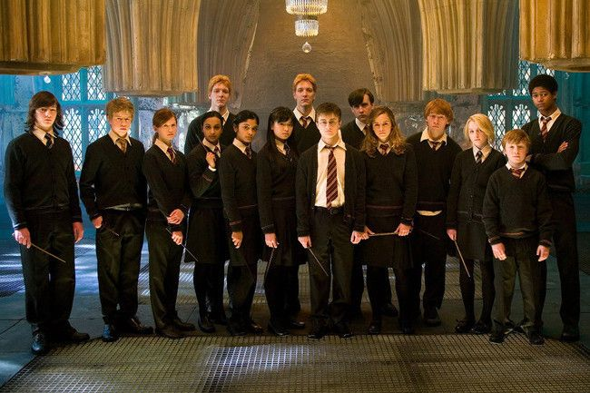
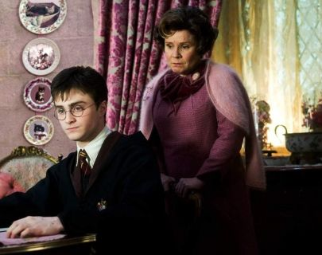

Harry Potter y la Orden del Fénix
 

Las aburridas vacaciones de verano en casa de sus tíos todavía no han acabado y Harry se encuentra más inquieto que nunca. Apenas ha tenido noticias de Ron y Hermione, y presiente que algo extraño está sucediendo en Hogwarts. En efecto, cuando por fin comienza otro curso en el famoso colegio de magia y hechicería, sus temores se vuelven realidad. El Ministerio de Magia niega que Voldemorrt haya regresado y ha iniciado una campaña de desprestigio contra Harry y Dumblendore,
para lo cual ha asignado a la horrible profesora Dolores Umbridge la tarea de vigilar todos sus movimientos. Así pues, además de sentirse solo e incomprendido, Harry sospecha que Voldemort puede adivinar sus pensamientos, e intuye que el temible mago trata de apoderarse de un objeto secreto(Horrocrux, cuando se crea uno de estos objetos estás poniendo parte de tu alma en él tras haber matado a alguien) que le permitiría recuperar su poder destructivo
